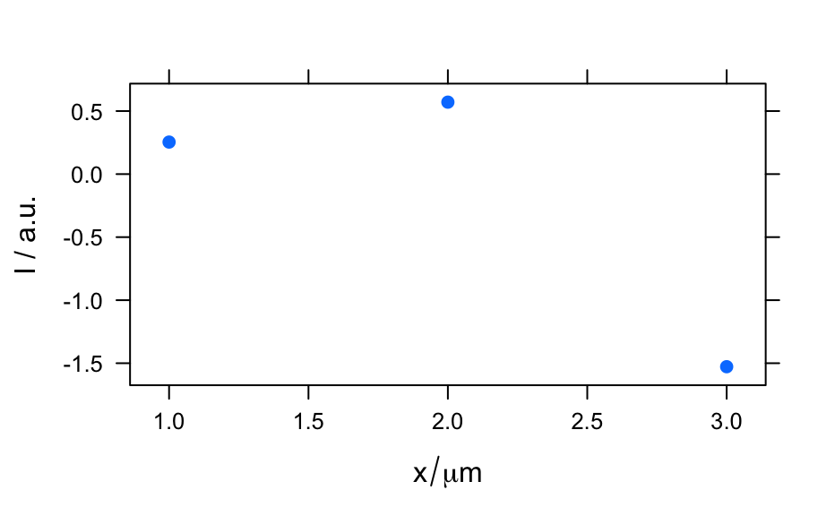

Like other S4 objects, a hyperSpec object can be created by new. The
hyperSpec object is then initialized using the given parameters.
# S4 method for hyperSpec initialize(.Object, spc = NULL, data = NULL, wavelength = NULL, labels = NULL)
| .Object | the new |
|---|---|
| spc | the spectra matrix.
|
| data |
However, it will usually be more convenient if the spectra are given in |
| wavelength | The wavelengths corresponding to the columns of
|
| labels | A If |
If option gc is TRUE, the initialization will have frequent
calls to gc(), which can help to avoid swapping or running out of
memory.
methods::new() for more information on creating and
initializing S4 objects.
grDevices::plotmath() on expressions for math annotations as
for slot label.
hy.setOptions()
C.Beleites
new("hyperSpec")#> hyperSpec object #> 0 spectra #> 1 data columns #> 0 data points / spectrum #> wavelength: [integer] #> data: (0 rows x 1 columns) #> 1. spc: [matrix, array0]#> hyperSpec object #> 3 spectra #> 1 data columns #> 4 data points / spectrum #> wavelength: [integer] 1 2 3 4 #> data: (3 rows x 1 columns) #> 1. spc: [matrix, array4] 0.2539920 0.5706299 ... -1.070747#> hyperSpec object #> 3 spectra #> 2 data columns #> 4 data points / spectrum #> wavelength: [integer] 1 2 3 4 #> data: (3 rows x 2 columns) #> 1. x: [character] a b c #> 2. spc: [matrix, array4] 0.2539920 0.5706299 ... -1.070747#> hyperSpec object #> 3 spectra #> 1 data columns #> 4 data points / spectrum #> wavelength: [numeric] 600 601 602 603 #> data: (3 rows x 1 columns) #> 1. spc: [matrix, array4] 0.2539920 0.5706299 ... -1.070747# given wavelengths precede over colnames of spc new("hyperSpec", spc = spc, wavelength = 700:703)#> hyperSpec object #> 3 spectra #> 1 data columns #> 4 data points / spectrum #> wavelength: [integer] 700 701 702 703 #> data: (3 rows x 1 columns) #> 1. spc: [matrix, array4] 0.2539920 0.5706299 ... -1.070747# specifying labels h <- new("hyperSpec", spc = spc, data = data.frame(pos = 1:3), label = list( spc = "I / a.u.", .wavelength = expression(tilde(nu) / cm^-1), pos = expression("/"(x, mu * m)) ) ) plot(h)plotc(h, spc ~ pos)#> Warning: Intensity at first wavelengh only is used.